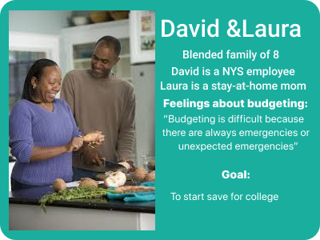
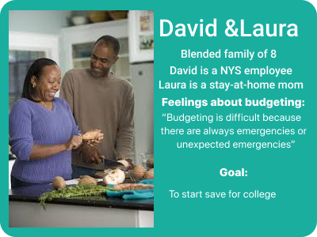

My Work
My background in Crisis Managemnet has allowed me the opportunity to focus my designs on prevention, repairing, and celebrating. I like to consider myself a designer of real things for real people. My work allows me to create spaces and opportunoities for people to actually live their lives with as little worry as possible.
My designs are simple, easy to navigate, and fun to use. They focus on user needs and are based on remedies for user painpoints.
Budget Break
This app was born from a class project. Our class was given a list of prompts to choose from. This prompt hit close to home. "Create a budgeting app for single parents." I must admit, I chose this one because I am a single parent and I just knew that my experiences would make the process easy and fun.
I was right about one thing. The process was fun, but it wasn't easy.
Personas
Using my interviews, I was able to come up with 3 personas. These are my main users.

 

Sketches and Wireframes
After I learned more about my users, I decided on a name. I thought of the user's time and desired effort for the act of budgeting. I thought let's make it something quick and easy. Something the user can do while on their break. The title Budget Break was born.
I started out with big ideas for how I wanted to create continuity through out the app. How can I connect the title with the look? I considered a coffee break. I drew doughnuts and sugar cubes. Coffee cups that overflowed once a goal was reached, and even colorful sprinkles to celebrate that accomplichment. Then I thought how are those things going to help my users budget and save? I changed course and decided not to be so literal. I considered my title and what it means. Breaks at work are at least 15 minutes long. How can my design help put those 15 minutes to good use? So I developed a simpler design.